Filmes
Naruto Clássico (3 Filmes)
Naruto o Filme: Confronto Ninja no País da Neve (2004)
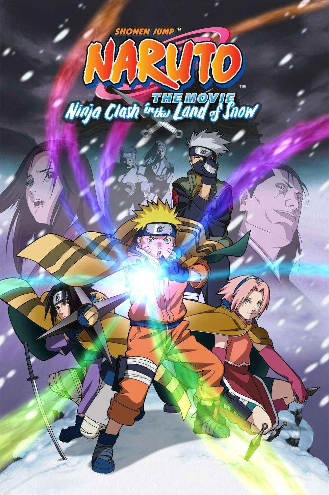
Naruto, Sasuke e Sakura são escalados para proteger Yukie Fujikaze, uma famosa atriz de cinema, durante as filmagens de seu novo longa no País da Neve. O que eles não sabem é que Yukie é, na verdade, a princesa herdeira daquela terra e está fugindo de seu tio tirano, Dotou Kazahana, que deseja um tesouro escondido no palácio. O Time 7 precisa ajudá-la a enfrentar ninjas que utilizam armaduras especiais de chakra para libertar o seu povo.
Naruto o Filme: Grandes Colisões! As Ilusões das Ruínas Subterrâneas (2005)
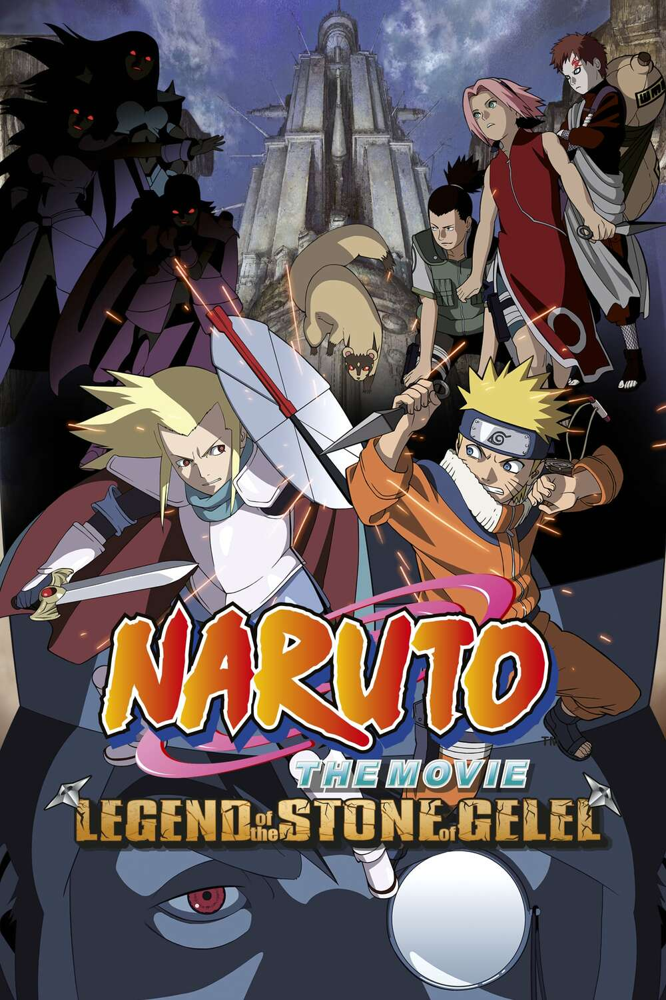
Durante uma missão para resgatar um furão de estimação perdido, Naruto, Shikamaru e Sakura são atacados por cavaleiros misteriosos trajando armaduras ocidentais. Naruto acaba se separando do grupo e conhece Temujin, um jovem guerreiro que serve a um lorde utópico. O conflito gira em torno do controle da Pedra de Gelel, um mineral lendário que possui um poder destrutivo imenso escondido em ruínas subterrâneas.
Naruto o Filme: A Revolta dos Animais da Ilha da Lua Crescente (2006)
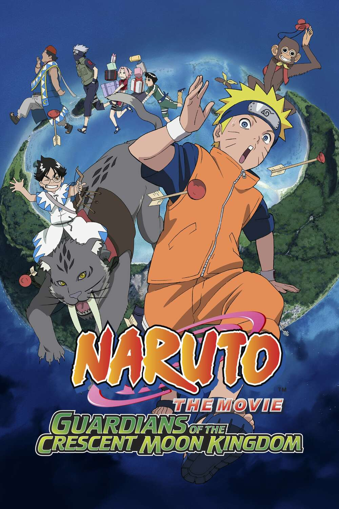
O Time 7, acompanhado de Rock Lee, recebe a missão de escoltar Michiru, o príncipe mimado do País da Lua, e seu filho Hikaru de volta para casa. Durante a viagem, o príncipe compra um circo inteiro repleto de animais raros, o que dificulta o trajeto. Ao chegarem à ilha da Lua Crescente, eles descobrem que um golpe de estado liderado por ministros corruptos e ninjas mercenários tomou o reino, forçando Naruto e seus amigos a lutarem para restaurar o trono.
Naruto Shippuden (8 Filmes)
Naruto Shippuden o Filme (2007)
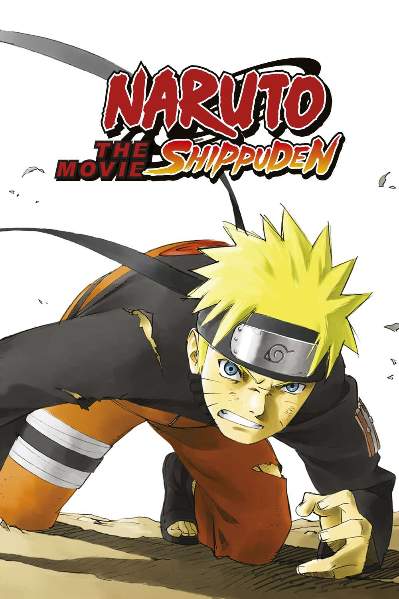
Um espírito maligno chamado Moryo ameaça destruir o mundo desperdiçando seu exército de soldados de pedra. A única pessoa capaz de selá-lo novamente é Shion, uma jovem sacerdotisa do País dos Demônios. Naruto e seu time são enviados para protegê-la em sua jornada. No caminho, Shion, que possui a habilidade de prever a morte de quem a cerca, profetiza que Naruto morrerá de forma trágica ao tentar protegê-la.
Naruto Shippuden o Filme: Vínculos (2008)
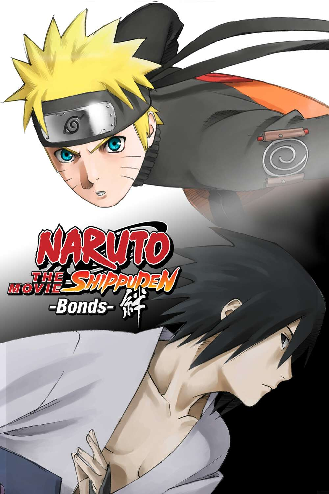
A Vila da Folha sofre um ataque devastador de surpresa vindo dos Céus, orquestrado pelos ninjas do País do Céu, uma antiga nação rival. Durante o caos, Naruto conhece um médico itinerante chamado Shinnou e sua discípula Amaru. A missão os leva a uma fortaleza voadora misteriosa, onde as circunstâncias forçam Naruto a unir forças temporariamente com Sasuke Uchiha, que havia deixado a vila para seguir seus próprios objetivos com Orochimaru.
Naruto Shippuden o Filme: Herdeiros da Vontade do Fogo (2009)
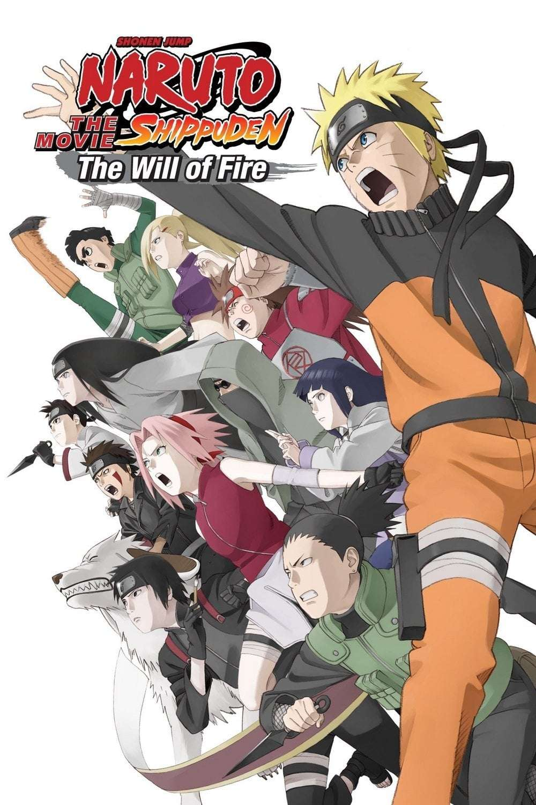
Ninjas portadores de Kekkei Genkai começam a desaparecer misteriosamente das quatro Grandes Nações Ninja, levantando suspeitas de traição contra a Vila da Folha. Para evitar uma guerra mundial iminente, Kakashi Hatake decide se sacrificar voluntariamente como parte de um plano selado no passado. Recusando-se a aceitar a morte de seu mestre, Naruto quebra as ordens diretas da vila e lidera seus amigos em uma missão de resgate.
Naruto Shippuden o Filme: A Torre Perdida (2010)
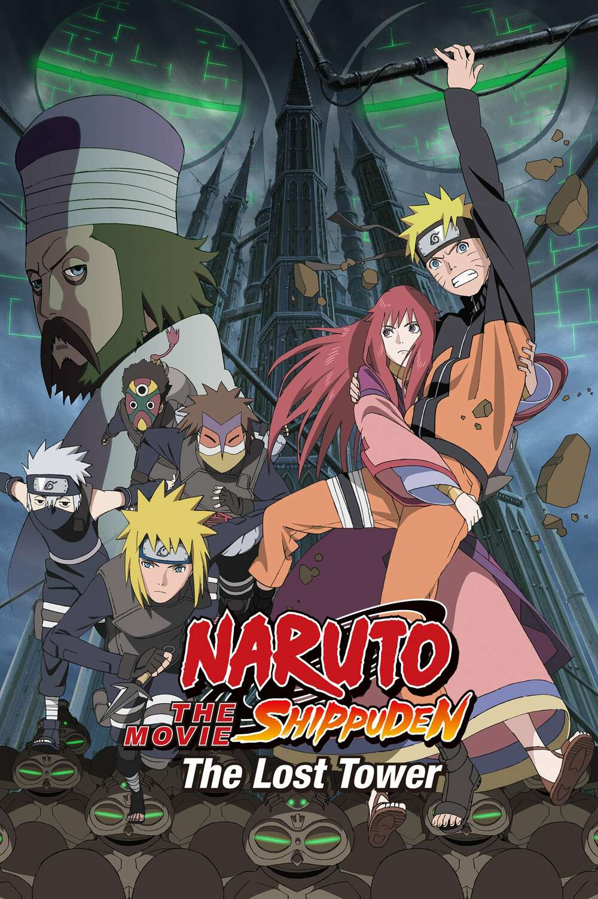
Ao perseguir Mukade, um ninja renegado que busca absorver o fluxo infinito de chakra das Ruínas de Ouran, Naruto é pego por uma explosão de energia temporal. Ele acorda duas décadas no passado na luxuosa e vertical cidade de Loran. Lá, ele une forças com a rainha local, Sara, e descobre uma aliança inesperada com uma equipe de elite de Konoha enviada no passado, liderada por ninguém menos que Minato Namikaze.
Naruto o Filme: Prisão de Sangue (2011)
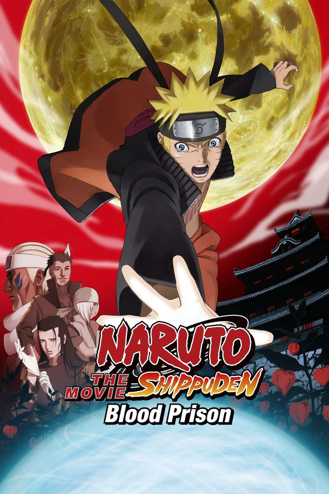
Naruto é injustamente acusado de tentar assassinar o Raikage e de matar ninjas de outras vilas. Como punição, ele é enviado para o Castelo Hozuki, uma prisão de segurança máxima conhecida como Prisão de Sangue. Lá, o diretor Mui sela os poderes de Naruto usando um jutsu de aprisionamento de chakra. Isolado e sem seus poderes habituais, Naruto precisa provar sua inocência enquanto descobre uma conspiração que envolve uma caixa capaz de realizar desejos.
Road to Ninja: Naruto o Filme (2012)
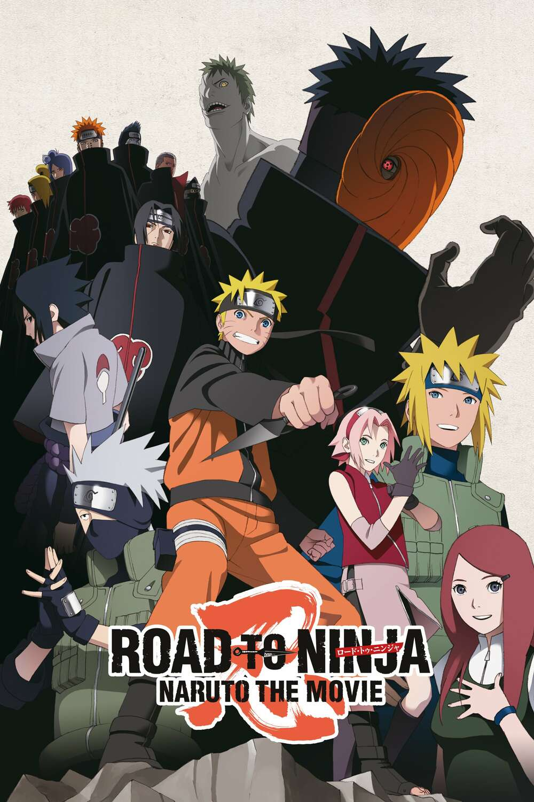
Tobi usa uma versão de teste do Tsukuyomi Infinito e envia Naruto e Sakura para uma realidade alternativa bizarra. Nesse mundo espelhado, os pais de Naruto, Minato e Kushina, estão vivos e são os heróis locais, enquanto os pais de Sakura foram os que se sacrificaram no passado. Além disso, as personalidades de seus amigos de Konoha estão completamente invertidas. Naruto se vê dividido entre viver a ilusão da família que nunca teve ou lutar para voltar à realidade.
The Last: Naruto o Filme (2014)
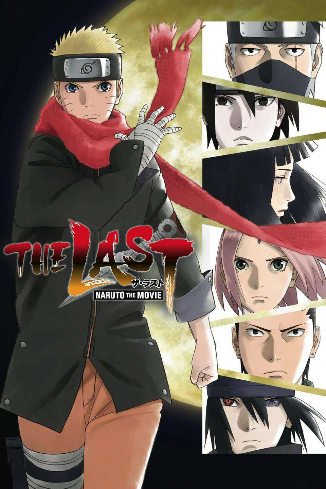
Dois anos após os eventos da Quarta Guerra Mundial Shinobi, Toneri Otsutsuki, um descendente de Hamura, ressurge com o plano de colidir a Lua contra a Terra para punir a humanidade por usar o chakra como arma. Ele sequestra Hanabi Hyuga para roupar o Byakugan e tenta forçar Hinata a se casar com ele. Naruto lidera uma equipe de resgate ao espaço profundo, enfrentando a maior ameaça del planeta enquanto finalmente compreende seus sentimentos românticos por Hinata.
Boruto: Naruto o Filme (2015)
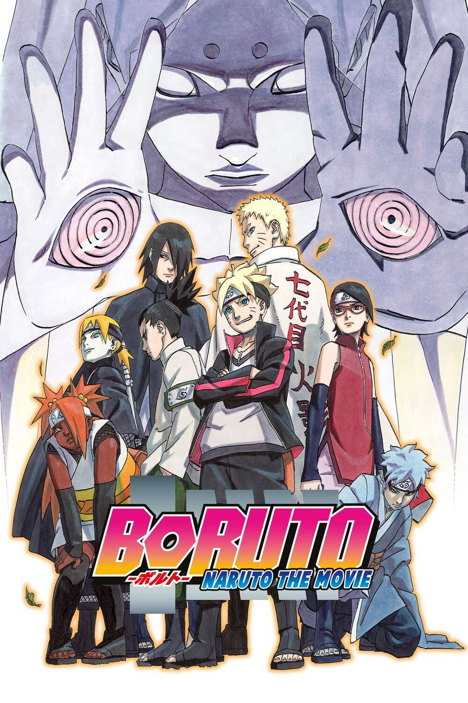
Naruto agora governa a Vila da Folha como o Sétimo Hokage, mas sua dedicação ao trabalho o afasta de sua família. Seu filho mais velho, Boruto Uzumaki, ressente a ausência do pai e decide treinar sob a tutela de Sasuke Uchiha para superá-lo. Durante o Exame Chunin, em uma Konoha moderna e altamente tecnológica, a avaliação é interrompida pelo ataque brutal de Kinshiki e Momoshiki Otsutsuki, forçando pais e filhos a unirem forças.